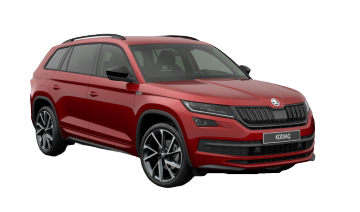

Historie modelu



Značka ŠKODA odstartovala v roce 2016 modelem KODIAQ svou SUV-ofenzívu a zahájila tím mimořádně úspěšný příběh. První velké SUV české značky získalo více než 40 mezinárodních ocenění za svůj emocionální design, velkorysou nabídku prostoru a vynikající poměr ceny a kvality. Sportovní varianta RS dokonce stanovila rychlostní rekord mezi sedmimístnými modely SUV na legendární Severní smyčce (Nordschleife) německého Nürburgringu. Za necelých pět let vyrobila ŠKODA AUTO na celém světě 600 000 vozů KODIAQ. V rámci velké SUV-ofenzívy značky pak následovaly další modely kategorie SUV. Podíl vozů ze segmentu SUV na celkových dodávkách zákazníkům značky ŠKODA mezitím vzrostl zhruba na 40%.
Martin Jahn, člen představenstva společnosti ŠKODA AUTO za oblast prodeje a marketingu, říká: „ŠKODA KODIAQ má pro naši značku obrovský význam. Tento model stál na počátku naší SUV-ofenzívy, díky níž jsme získali mnoho nových zákazníků po celém světě. Podíl vozů kategorie SUV dnes představuje přibližně 40 % našich celosvětových prodejů. Model KODIAQ se od samého počátku vyznačuje emocionálním designem, mimořádnou prostorností, vysokým jízdním komfortem za všech podmínek a vynikajícím poměrem ceny a kvality. Díky těmto hodnotám bude úspěšný příběh modelu KODIAQ pokračovat i v budoucnosti.“
Ještě před samotnou premiérou modelu uspořádala automobilka ŠKODA velkolepou akci, aby představila jeho jméno. Na jaře 2016 se městečko Kodiak, ležící na ostrově Kodiak u jižního pobřeží Aljašky, přejmenovalo na jeden den na KODIAQ. V jazyce domorodých obyvatel, Alutiiqů, je písmeno „Q“ na konci slova charakteristické pro názvy zvířat. Platí to i v případě největšího medvěda hnědého na světě – kodiaka, který žije pouze na ostrovech u aljašského pobřeží a jehož jméno velké SUV KODIAQ nese. Názvosloví modelu s „K“ na začátku a s „Q“ na konci pak převzala i všechna další SUV značky ŠKODA.
Po světové premiéře modelu KODIAQ, která proběhla 1. září 2016, zahájila společnost ŠKODA AUTO v říjnu 2016 jeho výrobu v závodě v Kvasinách v České republice. Uvedení modelu na trh na jaře roku 2017 znamenalo pro českou značku začátek nové éry, která jí pomohla transformovat se ve skutečného globálního hráče. Během necelých pěti let ŠKODA AUTO vyrobila 600 000 vozů KODIAQ, přičemž výrobu v českých Kvasinách doplnily i závody v Rusku, Číně a Indii. Velké SUV značka úspěšně prodává na 60 trzích po celém světě. KODIAQ je populární především v Číně, kde ŠKODA rovněž nabízí i modelovou variantu GT, a to zcela exkluzivně pouze pro tento trh. SUV-kupé pro čínský trh je speciálně upravené podle přání a preferencí čínských zákazníků. Po modelu KODIAQ rozšířily SUV rodinu značky ŠKODA modely KAROQ, KAMIQ a také čistě elektrický model ENYAQ iV. Nedávno byl představen i nový model KUSHAQ určený pro indický trh. Modely SUV tvoří přibližně 40 % celkových dodávek zákazníkům značky ŠKODA.
Na podzim 2018 představila značka ŠKODA model KODIAQ s označením RS. Oprávněnou pozici prvního SUV ve sportovní rodině RS si tento model vysloužil i dosažením rekordu na trati známé jako „Zelené peklo“. KODIAQ RS, poháněný nejsilnějším sériovým dieselovým motorem v historii značky ŠKODA, dosáhl na 20,832 kilometru dlouhém okruhu Nürburgring Nordschleife rekordního času 9:29,84 minuty. Trofeje ale KODIAQ sbíral i mimo závodní okruh. Do dnešního dne získalo toto SUV více než 40 mezinárodních ocenění od novinářů, odborníků, designérů a čtenářů motoristických časopisů. Zajímavé je, že první ocenění přišlo dokonce ještě před uvedením na trh. V listopadu 2016 totiž udělil britský magazín Top Gear modelu KODIAQ titul „Nejlepší auto světa pro velké rodiny“. Poté následovala další ocenění, například „Auto roku“ v České republice, Polsku a Bulharsku i několik titulů „SUV roku“ v různých kategoriích v čínských, francouzských, britských a indických médiích. V Německu, na svém nejdůležitějším evropském trhu, získal KODIAQ celkem čtyři tituly „Čtyřkolka roku“ a v roce 2017 byl oceněn i jako nejlepší v kategorii testovaných importovaných vozů. V témže roce vyhrál KODIAQ i jedno z prestižních ocenění Red Dot za vynikající design produktu.
Motory
Pod kapotu je na výběr z benzinových a naftových motorizací se dvěma úrovněmi hybridizace. Benzinový základ je mildhybridní, vyšším stupněm elektrifikace je pak pro Škodu nabíjecí (plug-in) hybrid. Silnější motory nabídnou pohon všech kol.
Škoda Kodiaq

| typ motoru |
roky výroby |
výkon |
| 1,4 TSI | 2016 - dosud | 92KW |
| 1,4 TSI | 2016 - dosud | 110KW |
| 1,5 TSI | 2018 - dosud | 110KW |
| 2,0 TSI | 2016 - dosud | 132KW |
| 2,0 TSI | 2019 - dosud | 140KW |
| 2,0 TSI | 2021 - dosud | 180KW |
| 2,0 TDI | 2018 - dosud | 85KW |
| 2,0 TDI | 2016 - dosud | 110KW |
| 2,0 TDI | 2017 - dosud | 130KW |
| 2,0 TDI | 2016 - dosud | 140KW |
| 2,0 TDI | 2020 - dosud | 147KW |
| 2,0 TDI | 2018 - dosud | 176KW |
recenze